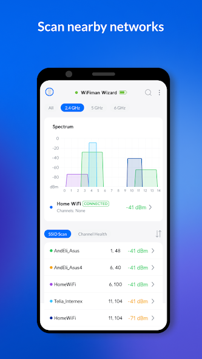

WiFiman 快问快答：普通人也能用的专业 WiFi 诊断工具
WiFiman 是 UniFi 厂商出品的免费网络诊断 App，测速、信号、信道扫描、设备发现一套搞定，本文整理了八个高频问题的直接答案。
整理一篇关于 WiFiman 的快问快答——八个问题覆盖从"它是什么"到"值不值得装"，每个答案第一句就给结论，省时间。
WiFiman 到底是什么？
WiFiman 是 Ubiquiti（UniFi 路由器的厂商）出品的一款网络诊断工具，官网上手机端和桌面端都有。它不是 UniFi 专属的配套 App，基础能力对任何品牌的路由器都开放——测速、信号监测、信道扫描、设备发现，这些功能全品牌通用。
核心逻辑很简单：打开 App 就能看到周围的无线环境、当前网络的真实速度、同网段连了哪些设备。UniFi 网关用户还能解锁远程回连（Teleport）和 AP 级的精细化管理，但不买 UniFi 也能用得很好。
谁需要它？
三类人最用得上。第一类是正在装修或刚搬完家的——拿着测速 + 信号读数把每个房间走一遍，哪里有死角当场量化，不用等网装好了才发现卧室里信号贴脸都跑不动。第二类是想优化自家网络的——扫描一下周围信道拥堵情况，决定换哪个信道、要不要升级 Mesh，决策有据。第三类是经常帮朋友修网的——Discover 页扫网段、Scan 页看频谱，随身带个"网络问诊套装"比瞎猜强太多。
其实还有一类隐性用户：有 UniFi 网关但没解锁远程的——WiFiman 的 Teleport 比官方的 SDN 界面友好得多，手机上点一下就能回"家"访问内网 NAS。
怎么装？
安卓端两条路。应用商店里搜 "Ubiquiti WiFiman"，认准开发者 Ubiquiti Inc.，点安装自动更新。国内环境连不上的话，拿独立 APK 安装包从wifiman下载手动装就行——包名是 com.ubnt.usurvey，两条路装出来是同一个东西，区别只在后续更新由谁推。
装完别急着点开，先去系统权限里把定位权限给了。安卓系统规定：不给定位，WiFi 扫描结果直接空。位置建议选"使用时允许"，系统设置里的位置信息总开关也要是开的——应用权限给了但总开关关着，Scan 页照样空白，这是系统级规则不是 App 故障。iOS 用户不需要定位权限，但首次启动要给本地网络权限，不然 Discover 页扫不到同网段设备。
核心功能怎么用？
四件事记住就够了。测速：首页点一下，十秒出下载、上传、延迟、抖动四个数字，历史记录里能看趋势对比。信号监测：Signal 页三条曲线实时看当前连接的信号强度、吞吐和稳定性，走到哪读到哪。信道扫描：Scan 页看周围哪些信道人多、哪些干净，安卓端有频谱图和 SSID 列表，iOS 端因为系统限制功能稍少。设备发现：Discover 页一键扫同网段所有设备，能看到每个设备的 IP、MAC、厂商，陌生设备一眼就能揪出来。
这四件事串起来就是一条完整的诊断链：先测速看"快不快"，再看信号强不强，再扫信道看周围挤不挤，最后查设备有没有人蹭网。

没有 UniFi 设备能用吗？
完全可以，而且是主力用法。WiFiman 在 App Store 四万人给出 4.8 分，核心原因就是它在"免费无广告的专业 WiFi 分析工具"这一档几乎没有对手——同类工具要么订阅制要么带广告，WiFiman 不收钱也不插广告。
能用的功能一个不缺：测速、信号、信道扫描、设备发现、蓝牙 LE 扫描、陌生设备排查。不能用的只有三块：Teleport 远程回连（需要 UniFi 网关做隧道端点）、WiFi Speed Factors 面板（需要网关侧数据）、漫游监测（单路由器没有漫游可测）。热力图测绘功能本身不依赖网关，但需要手机有 LiDAR 或深度传感器。
有什么坑？
三个高频踩坑点。安卓定位总开关：应用权限给了但系统"位置信息"总开关关着，Scan 页一片空白，90% 的"App 坏了"投诉出自这里。权限给错了不用重装，去系统设置里补就行。多网卡电脑的 Discovery：有线和 WiFi 同时连着的话，桌面版可能扫错网段，扫描前确认选对了网卡。Windows 桌面版还有历史包袱——Teleport 依赖虚拟网卡，1.2.x 系列多轮更新都在修这个问题，装之前建议先扫一眼已知问题列表，更多排查细节可以翻wifiman文档。
还有一个隐性坑：iOS 用户没有信道扫描页和信号热力图测绘，这不是 App 缺功能，是苹果系统封印了周围网络信息，所有 iOS 上的 WiFi 分析工具都受限。
和同类比怎么样？
对比两类竞品。第一类是收费的 WiFi 分析工具（NetSpot、WiFi Analyzer Pro 等）——订阅制年费几十到上百美元，WiFiman 免费且无广告，基础测速、信号、信道、设备发现这几项完全够用。第二类是路由器自带的管理 App（TP-Link、华硕等）——能用但功能浅，而且只能看自家路由器，WiFiman 是跨品牌的通用诊断，扫信道、测信号这两件事别家 App 基本做不了。
UniFi 用户有个额外好处：哪天你真换上 UniFi 网关了，Teleport 和 AP 级管理功能自动点亮，之前手机上存的测速记录、热力图数据全在，不用迁移。
值不值得长期用？
对普通人来说，WiFiman 是装了就留着的工具——平时不占空间，修网的时候掏出手机就能用，免费无广告这一点就够值得。UniFi 用户更不用说，Teleport 远程回连、AP 信号热力图都是日常高频功能。唯一需要注意的是安卓用户一定要把定位总开关打开，iOS 用户别期待信道扫描。
最后一句：免费、无广告、跨品牌通用，这个组合在网络诊断工具里几乎没有对手，手机里留一个准没错。安装包和文档资源在GitHub、Gitee、GitCode 三个仓库都有备份，按需取用就行。